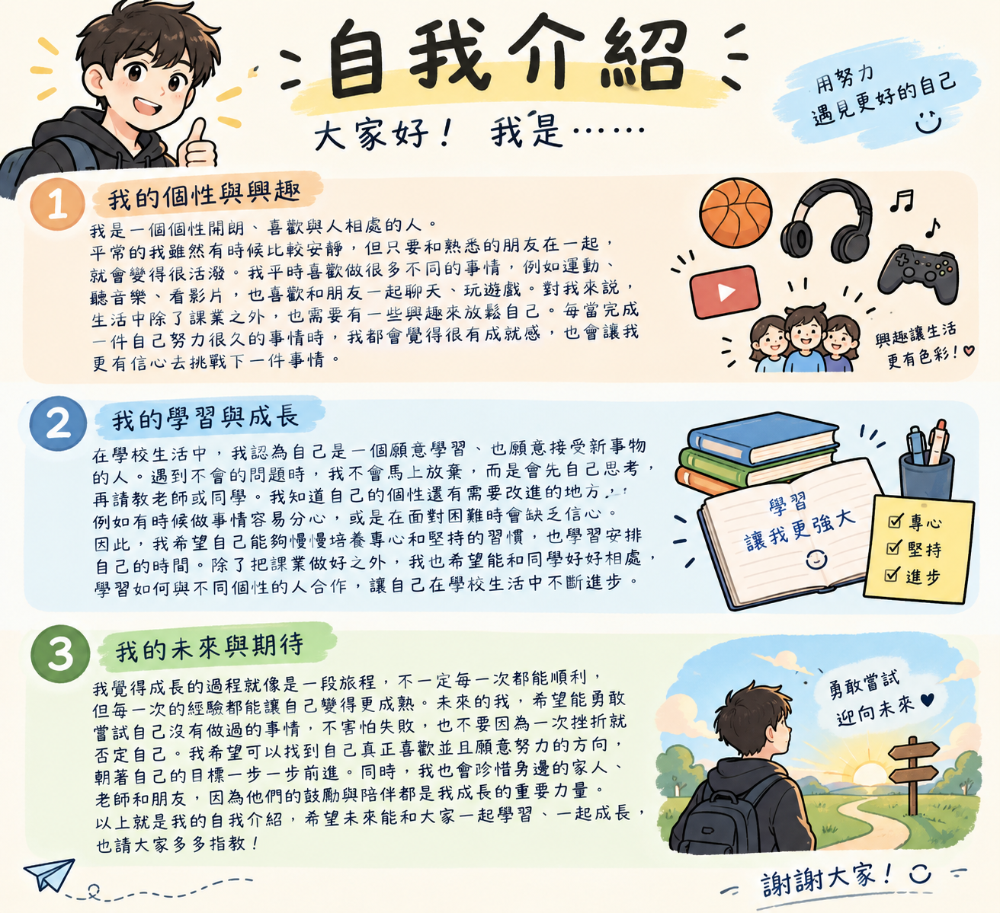

大家好，我是一個個性開朗、喜歡與人相處的人。平常的我雖然有時候比較安靜，但只要和熟悉的朋友在一起，就會變得很活潑。我平時喜歡做很多不同的事情，例如運動、聽音樂、看影片，也喜歡和朋友一起聊天、玩遊戲。對我來說，生活中除了課業之外，也需要有一些興趣來放鬆自己。每當完成一件自己努力很久的事情時，我都會覺得很有成就感，也會讓我更有信心去挑戰下一件事情。
在學校生活中，我認為自己是一個願意學習、也願意接受新事物的人。遇到不會的問題時，我不會馬上放棄，而是會先自己思考，再請教老師或同學。我知道自己的個性還有需要改進的地方，例如有時候做事情容易分心，或是在面對困難時會缺乏信心。因此，我希望自己能夠慢慢培養專心和堅持的習慣，也學習安排自己的時間。除了把課業做好之外，我也希望能和同學好好相處，學習如何與不同個性的人合作，讓自己在學校生活中不斷進步。
我覺得成長的過程就像是一段旅程，不一定每一次都能順利，但每一次的經驗都能讓自己變得更成熟。未來的我，希望能勇敢嘗試自己沒有做過的事情，不害怕失敗，也不要因為一次挫折就否定自己。我希望可以找到自己真正喜歡並且願意努力的方向，朝著自己的目標一步一步前進。同時，我也會珍惜身邊的家人、老師和朋友，因為他們的鼓勵與陪伴都是我成長的重要力量。以上就是我的自我介紹，希望未來能和大家一起學習、一起成長，也請大家多多指教！
